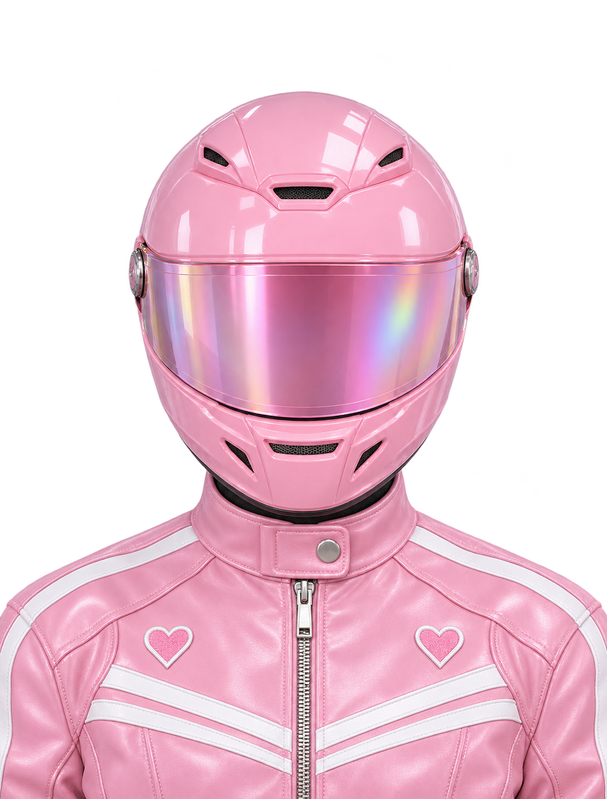

PERSONAL JOURNAL — VOL. 01理性思考，感性生活。
MOFARIGANO.

A WORK IN PROGRESS, ALWAYS.人生不限于
标准答案。
标准答案。
A life,
in progress.
Quant Research01
Making Things02
Little Joys03
10 / ABOUT ME一个人的，自我介绍
你好，我是 朱飞阳。
键盘之外：网球、羽毛球、徒步、摄影，
还有一场说走就走的旅行。
02 / SELECTED WORKS从想法，到眼前
创造的痕迹。
产品、研究与一些不设限的视觉实验。
每一个，都是好奇心留下的形状。
03 / LIFE, UNFOLDING生活没有单行道
走过的路，
都算数。
学习、工作、创造，和那些平凡的日常。
不是一份简历，是仍在书写的故事。
09 / SMALL THINGS, BIG JOY大人的小小快乐
欢迎来到，玩心收藏室。
为可爱留一个位置。
让每一个小小的它，都有自己的舞台。
08 / THE GOOD FINDS收藏，让喜欢有迹可循
我的宝藏抽屉。
11 / THE TOOLBOX把想法变成现实的伙伴
好奇心是引擎。
这些是工具。
01 / RESEARCH
用数据，寻找答案。
Python / SQL / pandas / DuckDB
scikit-learn / LightGBM / SHAP
02 / BUILD
用代码，构建体验。
TypeScript / React / Next.js / Three.js
FastAPI / PostgreSQL / Tailwind CSS
03 / COLLABORATE
和团队，一起做好。
研究设计 / 任务规划 / PR Review
可复现实验 / 测试与交付 / 技术文档
12 / MILESTONES值得记住的，高光时刻
每一步，都有回响。
04 / FIELD NOTES观察、思考与碎碎念